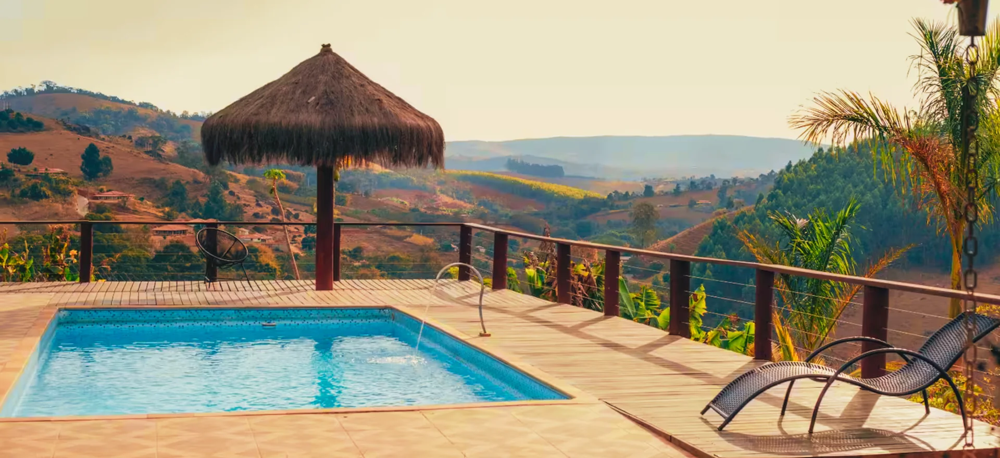
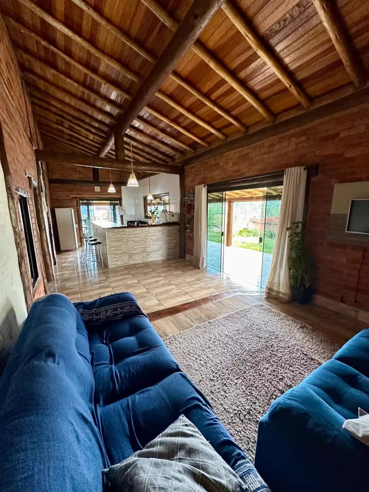

Piscina com vista
Deck de madeira debruçado sobre o vale, uma das poucas piscinas da região.

2.000 m² de natureza no corredor do Rio do Peixe, com piscina de frente para o vale, deck para relaxar e rancho completo para receber a sua turma.
A casa acomoda até 10 pessoas em 3 quartos e uma sala ampla com sofá-cama. Todos os quartos têm ventilador e paredes de tijolinho aparente.
Do lado de fora, o rancho reúne churrasqueira, forno a lenha, mesa grande e sinuca. A cozinha é completa, o terreno é alambrado e o acesso é asfaltado até a porta.

Os pontos que mais se repetem nos comentários de quem já ficou aqui.
Deck de madeira debruçado sobre o vale, uma das poucas piscinas da região.
Churrasqueira, forno a lenha, mesa de madeira grande e mesa de sinuca.
Vista para as montanhas e para o vale, no corredor do Rio do Peixe.
Sem estrada de terra, com estacionamento amplo e terreno alambrado.
Dezenas de frutíferas espalhadas pelo terreno, direto do pé.
Resposta em poucas horas, com horários de chegada e saída flexíveis.
Cada ambiente em uma categoria. Navegue pelas setas e clique na foto para ampliar.
A piscina fica na beirada do terreno, com deck de madeira, ombrelone de sapé e espreguiçadeiras voltadas para o vale. É onde todo mundo passa o dia.
No fim da tarde o sol se põe bem de frente, e a água reflete o céu inteiro.
O rancho coberto reúne churrasqueira de alvenaria, forno e fogão a lenha, bancada completa e uma mesa de madeira maciça que acomoda a turma inteira.
Do lado fica a mesa de sinuca, tudo de frente para a piscina e para a serra.
Sala ampla de pé-direito alto e teto de madeira, com dois sofás, sofá-cama e TV, e porta de vidro que abre direto para a área externa.
A cozinha é integrada e super completa: ilha com bancada de madeira, banquetas, 2 geladeiras, freezer e cooktop.
São 2.000 m² de terreno alambrado, com varanda em volta da casa, gramado aberto e o vale se abrindo logo ali na frente.
O acesso é asfaltado até a porta e o estacionamento comporta vários carros.
É só chegar com a comida e a roupa de cama.
Dezenas de árvores frutíferas espalhadas pelos 2.000 m². É só colher.
Escolha um quarto na lista ao lado para ver a foto dele.
Clique em um quarto para ver a foto
Depoimentos de quem passou uns dias na chácara e voltou para contar.
É o nome que mais se repete nos comentários dos hóspedes. Responde rápido, recebe pessoalmente e está por perto para o que precisar durante a estadia.
Asfaltado até a porta, com mercadinho pertinho e as principais atrações a poucos minutos.
Regras simples, para que todo mundo aproveite.
Preencha e abrimos o WhatsApp com tudo pronto.
Tudo o que você precisa saber antes de reservar.
Até 10 hóspedes, em 3 quartos e uma sala com 2 sofás e sofá-cama. Ao todo, 5 camas e 2 banheiros.
Sim, roupas de cama e toalhas não são fornecidas. O resto da estrutura, como cozinha completa, geladeiras e forno a lenha, já está tudo lá.
Pode. A chácara é pet friendly e o terreno é totalmente alambrado. Só pedimos respeito aos animais que já vivem no local.
Não. O acesso é asfaltado até a porta da chácara, com estacionamento amplo para vários carros.
Socorro é a capital paulista do turismo de aventura. Parques, rafting, tirolesa e o famoso balanço da cidade ficam a poucos minutos. Veja a lista completa na página O que fazer.
Clique em reservar, preencha as datas e envie pelo WhatsApp. A Bruna confirma a disponibilidade, passa os valores e envia as orientações de chegada.
Check-in a partir das 16h e checkout até as 14h. Horários diferentes podem ser combinados conforme a agenda.
Não é aquecida. Pedimos apenas que todos tomem uma ducha antes de entrar e evitem bronzeador ou protetor solar na água.
Sim. A cozinha é completa, mas os alimentos ficam por sua conta. Há um mercadinho bem perto para o que faltar.